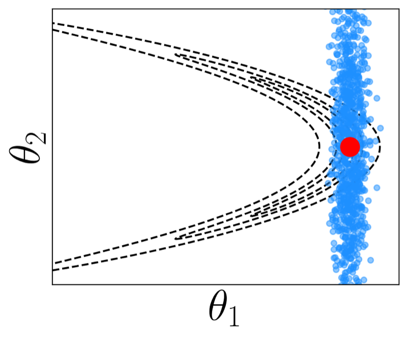
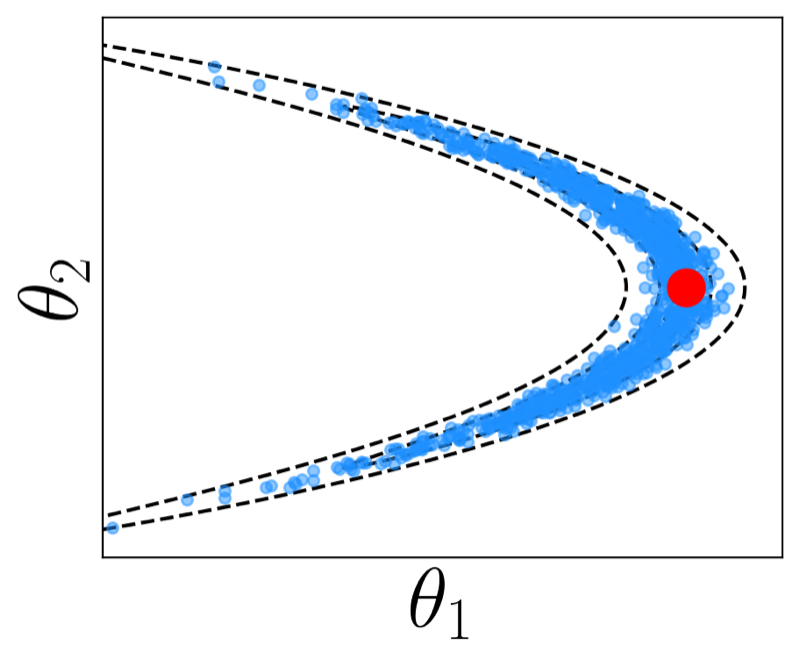
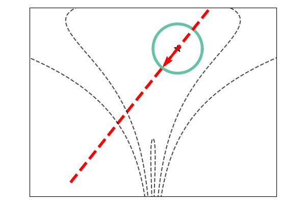
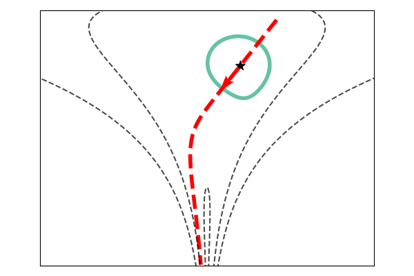
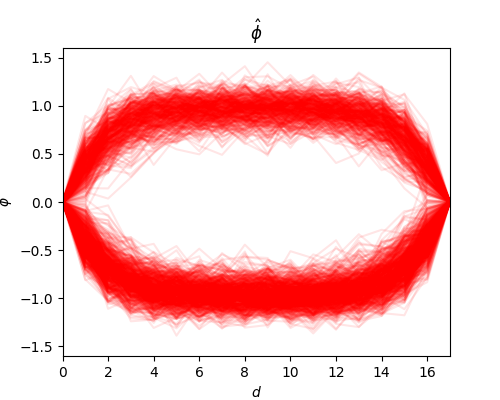
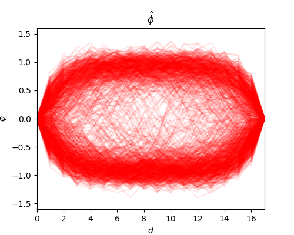
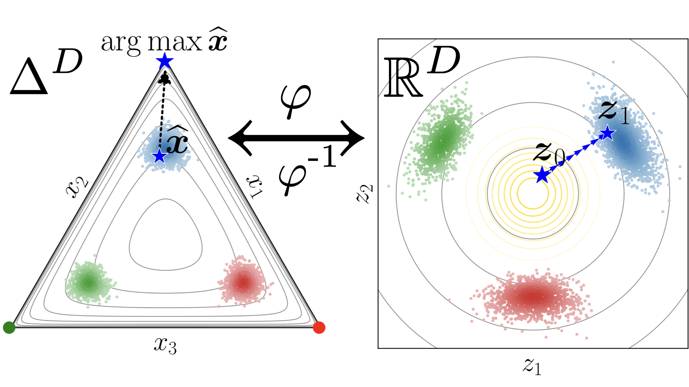
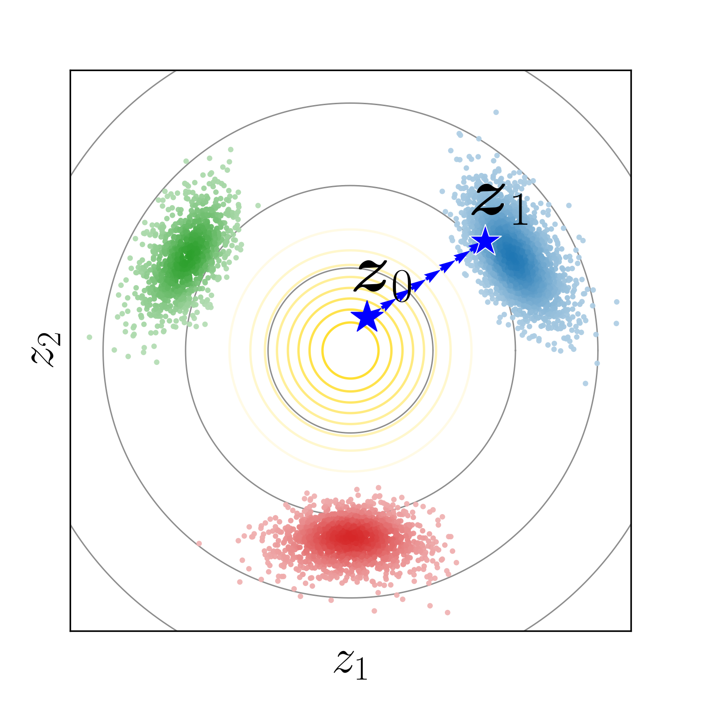
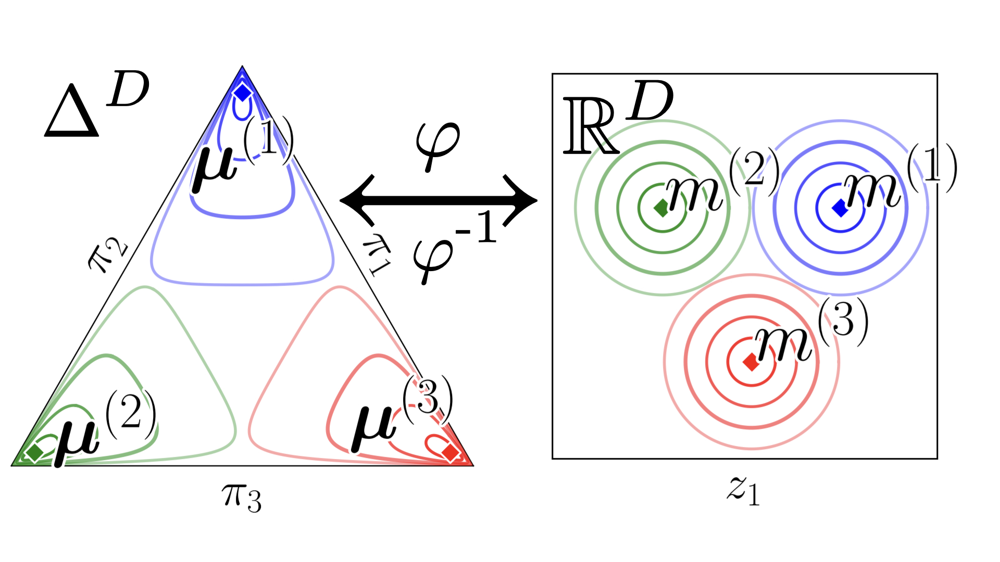

- A geometry-aware Laplace approximation for curved posterior distributions
Internal seminar
Bernardo Williams
Friday, 16 October 2026
Discrete Data
Data built from a finite alphabet
DNA sequences 4-symbol alphabet
ACCCGCGACAGACACCAAA
CTGGCGCTGCCCTGTGGGA
Language 27-symbol alphabet
the founder of modern anarchist theory in what is property proudhon answers with the famous accusation property is theft
Finite number of categories
Thesis goal: use statistical geometry to guide inference and modeling
Part I
\underbrace{p_{\mathcal X\mid\mathcal Y}(\boldsymbol{x}\mid\boldsymbol{y})}_{\text{posterior}}=\frac{\overbrace{p_{\mathcal Y\mid\mathcal X}(\boldsymbol{y}\mid\boldsymbol{x})}^{\text{likelihood}}\;\overbrace{p_{\mathcal X}(\boldsymbol{x})}^{\text{prior}}}{\underbrace{p_{\mathcal Y}(\boldsymbol{y})}_{\text{evidence}}}
p_{\mathcal Y}(\boldsymbol{y})=\int_{\mathbb R^D}p_{\mathcal Y\mid\mathcal X}(\boldsymbol{y}\mid\boldsymbol{x})\,p_{\mathcal X}(\boldsymbol{x})\,d\boldsymbol{x}
For many models, the evidence is intractable. With observed data fixed, we use the unnormalized target density.
Draw from a tractable approximation to the posterior
Paper I · Riemannian Laplace
Construct transitions that target the posterior
Paper II · Geodesic slice sampling
Thesis · Background, approximate Bayesian inference
A landscape analogy for paths in posterior inference
MCMC targets the posterior; Laplace draws from an approximation
\langle\boldsymbol{u},\boldsymbol{v}\rangle_{\mathbf G(\boldsymbol{x})}=\boldsymbol{u}^{\top}\mathbf G(\boldsymbol{x})\boldsymbol{v}
Treat parameter space as a smooth manifold; its metric assigns lengths to local movements.
\mathbf G(\boldsymbol{x})=\mathbf I_D
Geodesics are straight lines.
\mathbf G(\boldsymbol{x})\ \text{varies with }\boldsymbol{x}
Geodesics change with the chosen metric.
The same parameter space can be equipped with different metrics
Thesis · Riemannian geometry and metrics for Bayesian inference
The geometry (from a metric) determines the path
At a mode \hat{\boldsymbol{x}} of the target log density \ell, draw a tangent velocity:
\boldsymbol{v}\sim\mathcal N(\boldsymbol{0},\mathbf{\Sigma}),\qquad \mathbf{\Sigma}=\bigl(-\nabla^2\ell(\hat{\boldsymbol{x}})\bigr)^{-1}
\boldsymbol{x}=\hat{\boldsymbol{x}}+\boldsymbol{v}
A Gaussian approximation around the mode
\boldsymbol{x}=\operatorname{Exp}_{\hat{\boldsymbol{x}}}(\boldsymbol{v})
Push the tangent Gaussian along geodesics
The metric changes where the same tangent draws land
Paper I · The next slide compares Euclidean and Fisher Riemannian Laplace at the Hausdorff MAP


Better geometric fit. Additional computation.
Paper I · Riemannian Laplace Approximation with the Fisher Metric
Yu, Hartmann, Williams, Girolami & Klami · AISTATS 2024
s\sim\operatorname{Unif}(0,p(\boldsymbol{x})),\quad L(s)=\{\boldsymbol{x}':p(\boldsymbol{x}')>s\},\quad \boldsymbol{x}'\sim\operatorname{Unif}(L(s))
Orange shows the true slice; the blue step-out bracket reaches only its local component
One-point shrinkage illustration · Paper II uses a paired-proposal variant along geodesics
Choose a direction, then apply the same one-dimensional slice update along its path.


\boldsymbol{v}\sim\operatorname{Unif}(\mathbb{S}^{D-1}),\quad\gamma_{(\boldsymbol{x},\boldsymbol{v})}(t)=\boldsymbol{x}+t\boldsymbol{v},\quad\boldsymbol{x}'=\gamma_{(\boldsymbol{x},\boldsymbol{v})}(t^*)
Thesis, “Visualization of the hit-and-run procedure” · Paper II replaces the line and direction sphere with their metric counterparts
Inverse metrics increase Euclidean speed through low-density regions
Paper II · Geodesic Slice Sampler for Multimodal Distributions with Strong Curvature
Williams et al. · UAI 2025


Meta-MAGSS explored additional configurations in this test
Paper II · D = 16 Allen-Cahn field experiment. Runtime: PT 6 s; Meta-MAGSS 32 s in the reported setup.
Part II
\begin{aligned}D&:=K-1,\qquad \Delta^D:=\{\boldsymbol{x}\in\mathbb R_{\ge0}^K:\textstyle\sum_{k=1}^K x_k=1\},\\[-2pt] \mathring{\Delta}^D&:=\{\boldsymbol{x}\in\mathbb R_{>0}^K:\textstyle\sum_{k=1}^K x_k=1\}.\end{aligned}
One-hot labels lie on the boundary; continuous models use the open simplex
\operatorname{clr}(\boldsymbol{x})=\log\boldsymbol{x}-\frac{1}{K}\sum_{k=1}^{K}\log x_k\,\boldsymbol{1}\ \in\mathbb H^D
\boldsymbol{z}=\varphi(\boldsymbol{x})=\mathbf H\operatorname{clr}(\boldsymbol{x})=\mathbf H\log\boldsymbol{x}\ \in\mathbb R^D
\boldsymbol{x}=\varphi^{-1}(\boldsymbol{z})=\mathcal C\!\left(\exp(\mathbf H^\top\boldsymbol{z})\right)
CLR reaches the zero-sum hyperplane; Helmert ILR is isometric; ALR and stick-breaking are not
\boldsymbol{x}=\lambda\boldsymbol e_k+(1-\lambda)\boldsymbol\varepsilon,\quad \boldsymbol\varepsilon\sim\operatorname{Dir}(\alpha\boldsymbol1),\quad \lambda\ge\tfrac12\Longrightarrow\arg\max_i x_i=k\ \text{a.s.}
\begin{aligned} \boldsymbol\mu^{(k)}&=\lambda\boldsymbol e_k+(1-\lambda)\tfrac1K\boldsymbol1,\qquad \boldsymbol m^{(k)}=\varphi(\boldsymbol\mu^{(k)}),\\[-2pt] \boldsymbol z\mid c=k&\sim\mathcal N\!\left(\boldsymbol m^{(k)},\sigma^2\mathbf I_D\right). \end{aligned}
Paper IV · Gaussian components can overlap; the noise scale controls the chance of crossing a category boundary
Stochastic interpolation + simplex-to-Euclidean map

DNA sequences 4-symbol alphabet
A · C · G · T
Language 27-symbol alphabet
the founder of modern anarchist theory in what is property proudhon answers with the famous accusation property is theft
a · b · c · … · z · space
Train in Euclidean coordinates; map back and take argmax to generate a category
Paper III · Simplex-to-Euclidean Bijections for Categorical Flow Matching
Williams, Yeom-Song, Hartmann & Klami · AISTATS 2026

\boldsymbol z_0\sim p_0=\mathcal N(\boldsymbol 0,\mathbf I_D)
Dirichlet interpolation moves a label into the open simplex.
\boldsymbol z_1=\varphi(\boldsymbol x),\quad \boldsymbol x\in\mathring\Delta^D
\boldsymbol z_t=(1-t)\boldsymbol z_0+t\boldsymbol z_1
\boldsymbol v_\theta(\boldsymbol z_t,t)\approx\boldsymbol z_1-\boldsymbol z_0
Generate by integrating \boldsymbol v_\theta, then apply \varphi^{-1} and \arg\max.
Blue shows a linear training path; generation follows the learned velocity field
Paper III · On Text8, the method was competitive among continuous approaches; a discrete diffusion model performed best overall
One input. One of several categories.

D=K-1,\qquad\mathbf f=(f^{(1)},\ldots,f^{(D)})
f^{(d)}(\cdot)\overset{\mathrm{ind}}{\sim}\mathcal{GP}(0,K_\theta),\quad d=1,\ldots,D
z_i^{(d)}\mid f^{(d)}(\boldsymbol r_i)\sim\mathcal N\!\bigl(f^{(d)}(\boldsymbol r_i),\sigma^2\bigr)
f^{(d)}(\boldsymbol r_*)\mid\mathcal D\sim\mathcal N\!\bigl(\mu_*^{(d)},\sigma_*^2\bigr)
Gaussian conjugacy gives the predictive mean and variance in closed form:
\mu_*^{(d)}=\mathbf k_*^\top(\mathbf K_N+\sigma^2\mathbf I_N)^{-1}\boldsymbol z^{(d)}
\sigma_*^2=k_{**}-\mathbf k_*^\top(\mathbf K_N+\sigma^2\mathbf I_N)^{-1}\mathbf k_*
Paper IV · Thesis likelihood illustration for three classes · Full ILR had the lowest calibration error on three small UCI tasks
\begin{aligned} \mathbb E[\boldsymbol\pi_*\mid\boldsymbol r_*,\mathcal D]&\approx\frac1S\sum_{s=1}^S\varphi^{-1}\!\bigl(\mathbf f_*^{(s)}\bigr),\\[-2pt] \mathbf f_*^{(s)}&\sim\mathcal N(\boldsymbol\mu_*,\boldsymbol\Sigma_*). \end{aligned}
Paper IV · Simplex-to-Euclidean Bijection for Conjugate and Calibrated Multiclass Gaussian Process Classification
Williams, Tetali, Klami & Hartmann · UAI 2026
Paper I · AISTATS 2024
Riemannian Laplace Approximation with the Fisher MetricPaper II · UAI 2025
Geodesic Slice Sampler for Multimodal Distributions with Strong CurvaturePaper III · AISTATS 2026
Simplex-to-Euclidean Bijections for Categorical Flow MatchingPaper IV · UAI 2026
Simplex-to-Euclidean Bijection for Conjugate and Calibrated Multiclass Gaussian Process Classification